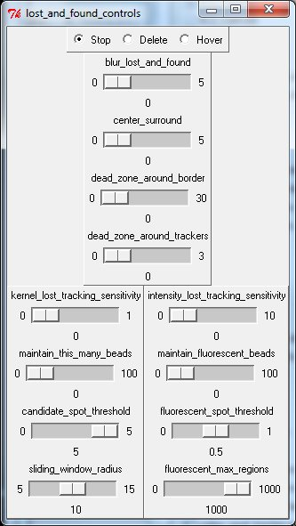
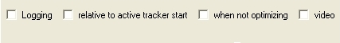

Using the program
Using the programThe Video Spot Tracker program is used to track the motion of one or more spots (particles) in an FFMPEG-compatible video file, from a Microsoft DirectShow-compatible camera, from a Roper Scientific camera, from a DiagInc SPOT camera, from a camera attached to an EDT video capture board (we use a Pulnix camera this way at UNC), or from a set of TIFF, PPM, PGM, BMP files (it can read other, compressed file formats that can be read by ImageMagick but these are not included in the default set because these file formats distort images in ways that affect tracking accuracy). It can also read raw, uncompressed 8-bit video files.
An installer for the program and manual can be downloaded from the CISMM software download page. It requires Microsoft Direct X version 9.0a or higher to use DirectShow-compatible video cameras.
To convert the VRPN output files to Matlab format requires the VRPNLogToMatlab program, also available from the CISMM download page. These packages can be installed in any order.
The development, dissemination, and support of this program is paid for by the National Institutes of Health National Institute for Biomedical Imaging and Bioengineering through its National Research Resource in Computer-Integrated Systems for Microscopy and Manipulation at the University of North Carolina at Chapel Hill. This program is distributed without charge, subject to the following terms:
Thank-You Ware: Rather than making you register to download our software or join a mailing list or provide other personally-identifying material to use our code, we've come up with the following easy and anonymous way for you to let us know we're helping the community. When you press the "Say Thank You!" button to let us know you appreciate having the tool, the application sends a web query to our server and logs your response (not your name or your phone number, just a web hit count). We add up these counts and report them to the reviewers for our renewal applications when we ask NIBIB to continue funding us to maintain our existing tools and to build new ones. Please press the button whenever you feel like the tool has been helpful to you.
The program is run by dragging a video file or image file onto the desktop icon that was created when the program was installed. To select a stack of image files that are numbered consecutively, drag any one of the files onto the icon. It can also be run by selecting one of the camera-specific shortcuts from Start Menu/All Programs/NSRG/Video Spot Tracker. If you run the program directly by double-clicking on the icon, it will ask for a video or image file (AVI, TIF, or BMP, PPM, raw) that it should open.
If you open a raw video file, the program will try to guess the frame size by seeing if it matches a 648x484 image (some Pulnix cameras) or a 1024x768 + 112-byte per-frame header (some Point Grey cameras). If neither of these seem to work, then it will bring up a dialog box like the one shown to the left to ask you about the file format so that it can read it. The NumX and NumY parameters specify the image size, the skip_at_file_start parameter tells how many bytes to skip at the beginning of the file (skipping a file header). The skip_for_each_frame value tells how many bytes to skip at the beginning of each frame in the video, to skip any per-frame header information. The raw file must be single-channel, 8-bit values to be properly interpreted. If you put incorrect values, the images will appear to be scrambled, to slant, and to jump around between frames.
NOTE: With Windows XP service pack 2 and with other firewall software, running the program causes a dialog box to appear asking whether to block the program; the program needs to be unblocked only if the program is to be connected to a local or remote feedback system that relies on the tracking data. This happens when the program opens the Internet port assigned to it (3883) by the Internet Domain Naming Authority to export the data through the standard VRPN protocol (www.vrpn.org).
Using the programWhen the program is run and a file is selected, four windows will appear. The image window that appears on the lower right contains the first image within the video file or a continually-updating image from a live camera feed. The control panel named tk that appears on the left when the program is run (shown here to the right) contains a number of interaction widgets that control the operation of the program. The kernel control panel that appears above the image window (described later) controls the type of tracking kernel being used. The log control panel is described later.
If the video file (or video camera) contains different data sets in the red, green, and blue channels then you will need to select the one you want to view. By default, the red channel R is selected. To select a different channel, click on G for green or B for blue. The video window should change to display the selected channel.
There is a brighten slider that will let you increase the displayed intensity of images that don't use their whole range (if the integration time on the camera was very low, for example). Sliding it to the right will make images that are too dark visible so you can see where to put the tracker. Setting it too high will cause a white image (when use_opengl_video is set) or a wrap-around strange-looking image (when it is not). This setting has no effect on tracking, only on the images shown on the screen.
To select the first spot to track, click on its center with the left mouse button. A red plus sign will appear at the location you have selected. If you want to adjust its radius, you can hold the mouse button down after you have clicked and pull the mouse away from the center; pretty soon, the radius of the disk will track the distance you have pulled the mouse from the center. You can also adjust the radius by clicking on the number beneath the radius slider within the kernel control panel and entering it into the dialog box that appears or by moving the radius slider.
When a new tracker is created it turns red to indicate that it is the active tracker; all other trackers turn blue. To create more trackers, click on the center of each new spot with the left mouse button. The default radius of each new spot tracker will match the radius of the spot that was active when the new one is created. Each tracked spot will be labeled with an index that matches its index in the stored tracking file.
If you click with the right mouse button, the closest tracker is moved to the location you picked and it becomes the active tracker (in red). The active tracker's position and radius are shown in the user interface, and they can be edited by clicking on the number beneath the relevant slider. By selecting different trackers using the right mouse button, you can adjust the position of each tracker one at a time.
You can drag a tracker to a new location by clicking the right mouse button on top of it and then holding the button down to drag the tracker to a new location. Note that when optimization is turned on, the tracker will always jump to the optimum location nearest the current location of the mouse cursor.
You can delete an unwanted tracker by making it the active tracker (click on it with the right mouse button) and then pressing the delete or backspace key on the keyboard. In version 3.02 and higher, indices are not repeated even after trackers are deleted.
If you prefer to not have the centers of the tracked objects obscured by the tracking markers, select the round_cursor checkbox from the tk control panel. This will replace the plus signs with a circle around the center at twice the radius that the kernel is set to use.

There are four types of tracking kernels available: disc, cone, symmetric, and FIONA. Their properties are controlled using interface widgets in the kernel control panel.
For tracking spots that are even in intensity, or which have uneven intensities within them but a defined circular edge, the disc kernel should be used. The radius should be set to match the radius of the spots you wish to track. The interpolate checkbox should be set for more accuracy and cleared for more speed.
For tracking spots that are brighter in the center and drop off to dim (or darkest in the center and ramp up to bright), the cone kernel should be used. For cone tracking, the radius should be set about 1/3 larger than the spots you want to track (giving the kernel a good sampling of the background as well as the spot). The setting of the interpolate check box does not matter for the cone tracker (this tracker always interpolates).
A parameter relevant for both the disc and cone kernel is whether the spots are dark points in a lighter background (the default) or lighter points in a dark background). This is controlled using the dark_spot check box located at the top of the user interface. You should set this for the type of spot you are seeking.
If the bead profile is changing over time, or if it does not fit well into one of the above categories, then the symmetric tracker should be chosen. This tracker operates by locating the minimum variance in concentric rings around the bead center. It sums the variance in circles of radius 1, 2, 3, ... up to the radius setting and divides each circle's radius by its circumference to provide even weights for each ring. The radius should be set to be at least slighly larger than the bead that is to be tracked; setting it larger will not harm tracking except to make the program run more slowly. The setting on the dark_spot check box has no effect when symmetric tracker is chosen.
For fluorescent emitters that are much smaller than a pixel, use the FIONA kernel. This is based on code from Paul Selvin's laboratory for implementing "Fluorescence Imaging with One Nanometer Accuracy." The technique is described in "Molecular motors one at a time: FIONA to the rescue" by Comert Kural, Hazma Balci and Paul Selvin from UIUC. It finds the least-squares fit 2D Gaussian to the area around the point, to approximate the effect of integrating an Airy pattern centered at the emitter. The technique implemented here differs from the UIUC implementation in two ways. First, it assumes a symmetric Gaussian (this assumes square pixels). Second, it only fits out to four standard deviations from the center (this prevents somewhat distant spots from interfering with the optimization). Even with this reduced radius, two points come near each other, they will interfere with one another's tracking even if the two bright spots do not overlap. Hint: If you are using the FIONA kernel, you may want to turn on the follow_jumps control; this will make the tracking slower, but will keep from getting lost if the particle moves too far in a single frame.
 The rod3
kernel is a composite kernel. This is actually a grouping of three subkernels,
each of which is one of the above types. These three kernels lie along the same
line and move as a unit; they seek to track bars in the image. When this kernel
box is selected, a new control panel will appear. This control panel is shown
to the right, and it enables control over the length (in pixels) and orientation
(in degrees) of the bar trackers. As with the radius and position controls described
above, these controls change to display and control the values of the active
tracker. The most successful bars may be made of cone kernels and be slightly
less than the actual length of the bar on the screen. The symmetric kernel is
probably the least useful. Note that if the bars flex, this tracker may not
work very well.
The rod3
kernel is a composite kernel. This is actually a grouping of three subkernels,
each of which is one of the above types. These three kernels lie along the same
line and move as a unit; they seek to track bars in the image. When this kernel
box is selected, a new control panel will appear. This control panel is shown
to the right, and it enables control over the length (in pixels) and orientation
(in degrees) of the bar trackers. As with the radius and position controls described
above, these controls change to display and control the values of the active
tracker. The most successful bars may be made of cone kernels and be slightly
less than the actual length of the bar on the screen. The symmetric kernel is
probably the least useful. Note that if the bars flex, this tracker may not
work very well.
The follow_jumps check-box activates a more-robust tracking algorithm that first looks for the best image match within 4 radii of the prior position and then performs the standard kernel match. This makes the tracking run more slowly, but is more robust to bead motion between frames. It does not affect the accuracy or the style of the main optimization for the kernel, it is only used to initialize the new search location between frames.
This following can be made faster (and slightly less reliable) by using estimated velocity to predict where the bead will be and reducing the search area. This is only true for beads whose motion is driven by a force; using velocity estimation on Brownian motion will produce worse results. Prediction is enabled by selecting the predict check-box. It is not recommended to use prediction without follow_jumps unless the motion is very linear. To get the tracker to reliably lock on, it is important to catch the bead when it is moving relatively slowly because the initial velocity estimate is zero velocity.
Once you have selected the type of tracker to use, and have selected spots to track, check the optimize checkbox. When you do this, the trackers should all move themselves to the centers of the spots they were started on. You can continue to add trackers using the right mouse button after you have checked the optimize button; they will try to follow the center of the spot even as you adjust their radius.
If you have saved a radially-averaged spread function for the spots you are tracking (using the CISMM Video Optimizer program), you can use it to estimate Z values for the spots by clicking the optimize_z button and then selecting the spread function's TIF file in the dialog box that appears. The Z location will now be updated based on the spread-function stack.
There is a show_lost_and_found button on the main control panel that brings up the control panel shown to the right.
Blur/Surround: There are two controls that affect how the image is processed before the lost or found processing is performed on it. These do not affect the actual tracking, but do affect how beads are located or discarded. If you turn on show_debug on the main control panel, the image will reflect the settings to help you determine effective ones. The window will also indicate where beads would be found given the current threshold and auto-find settings. The blur_lost_and_found slider controls the width in pixels of a Gaussian kernel that is convolved with the image to remove noise before the lost and found processing is done to it. A setting of zero disables this feature, and higher numbers blur away larger and larger features. The center_surround slider subtracts the surrounding value from each point (blurring with a kernel that is the sum of the two sliders), reducing the impact of background brightness level. This slider is useful in fluorescence videos where the background is non-uniform. It only takes effect if both blur_lost_and_found and center_surround are nonzero.
Lost: Two tracking sensitivity sliders located on this control panel set thresholds for detection of lost tracking. A threshold setting of zero disables each feature, and is the default. The kernel_lost_tracking_sensitivity is most often useful for brightfield microscopy video or reflected-light videos. Useful values for the threshold depends on the type of kernel you are using to track; this slider provides a normalized "how sensitive" control that should be approximately the same across types (the FIONA tracker uses the whole range 0-1, but the symmetric kernel needs only a very small number). If the threshold is exceeded by one or more beads while tracking, the associated bead is marked as lost.
The intensity_lost_tracking_sensitivity slider is most useful for fluorescence videos. Its value is independent of the kernel being used; it works based on how different the brightess at the center of the tracked bead is from the region surrounding the bead. In particular, it finds the mean and variance of pixel intensities at the edge of a box around the bead center that is 1.5 times as large as the bead diameter. It then compares the variance (squared difference from the mean) of the value at the center of the bead from the mean value of the border; if it is less than the variance times this sensitivity setting, then the bead is marked as lost. This parameter is particularly useful for fluorescence images with low backgrounds, but could also be used for dark beads on bright backgrounds.
Strayed: The dead_zone_around_border slider sets a boundary around the edge of the clipping region (see Faster display update section below for a description of clipping). If a bead gets within this many pixels of the border, it is marked as lost. The dead_zone_around_trackers slider marks beads as lost when they get too close to each other -- their locations being within the specified radius of each other. When either of these sliders are set to 0, its dead-zone feature is disabled.
When a bead becomes lost for any of the above reasons, the result depends on the setting for the radio buttons:
Found: There are also two independent tracker-finding mechanisms, one for brightfield and one for fluorescence. Brightfield uses the maintain_this_many_beads slider, if set to above zero, will attempt to automatically place new trackers whenever there are fewer than the number requested. It places them in the locations on the screen that have the best matches for the present kernel settings, and it creates them with the present kernel settings. The trackers will not be placed within one radius of the edge of the screen or within two radii of existing trackers. The candidate_spot_threshold can be used to filter out spots that are not likely to be beads; the higher the setting, the more discriminating the test. The lost_tracking_sensitivity also controls where trackers will be initialized; they will not appear where they would be immediately lost.
The maintain_fluorescent_beads slider, if set above zero, will attempt to automatically place new trackers based on the fluorescent_spot_threshold setting. The threshold is expressed as a fraction of the total intensity in the frame; the darkest pixel is mapped to 0 and the brightest to 1. Any region of the image that is above the threshold is considered to be a candidate for a bead. The fluorescent_max_regions controls how many different regions of the image will be checked to see if a tracker should go there -- for very noisy images, there can be a huge number of regions and this can cause the program to run very slowly or crash. Reducing this number will make the autofind faster, but may miss spots. The intensity_lost_tracking_sensitivity also controls where trackers will be initialized; they will not appear where they would be immediately lost.
 Once you have created all of the trackers you want, you may check the small_area checkbox. This will cause the program to limit its update to a small area of pixels that surrounds the active trackers. This requires less processing and makes the update rate faster when the video is played. For the Roper and SPOT cameras, it also reduces the amount of data transmitted from the camera itself, again increasing the frame rate. This area will update itself as the trackers move, and it extends 4 radii past each tracker. This should enable the trackers to continue to track spots that are moving away from the updated video area. A green box shows up in the video window to indicate the area being updated.
Once you have created all of the trackers you want, you may check the small_area checkbox. This will cause the program to limit its update to a small area of pixels that surrounds the active trackers. This requires less processing and makes the update rate faster when the video is played. For the Roper and SPOT cameras, it also reduces the amount of data transmitted from the camera itself, again increasing the frame rate. This area will update itself as the trackers move, and it extends 4 radii past each tracker. This should enable the trackers to continue to track spots that are moving away from the updated video area. A green box shows up in the video window to indicate the area being updated.
You can also manually adjust the area that is updated using the minX, maxX, minY, and maxY sliders that appear when the show_clipping check box is on. If you do this, you will want to un-check the small_area setting.
To turn off the small area tracking, and to undo the selection of a manual region, click the full_area checkbox once. It will reset the update area to cover the whole image and turn small-area tracking off.
You can check the position of each tracker in turn by clicking on each with the right mouse button, which makes each the active tracker that shows its values in the x, y, and radius displays. Note that these may show subpixel positions and radii.
You can control the minimum step size that the optimizer will use by adjusting the precision slider within the tk control panel. Smaller values make the program run more slowly but will result in the program attempting to find the position with greater precision (this will not necessarily correspond to greater accuracy, due to noise and possibly aliasing).
You can also adjust the number of samples made to determine the fit at each spot location. The sample_spacing slider controls both the number of circles around each point that are sampled and the number of samples around each circle. The default spacing of one pixels causes a pixel-sized step to be taken between the center and each radial distance, and also a single-pixel step to be taken around each circle. The speed of calculation varies as the inverse square of the pixel spacing. Note that the samples are not taken at pixel centers, but are interpolated based on the tracker center. Also, the pixel starting location is staggered for each new circle (moving a half pixel further around) to prevent sampling preferentially along the horizontal axis. the image shown here is for the symmetric tracker, which does not sample at the center; the cone and disc trackers have a single sample in the center.
You can record the motion of the trackers by checking the Logging checkbox within the log control (shown to the right) inside the kernel control panel. This will bring up a dialog box that will let you select a filename. It will automatically add the default extension ".vrpn" to the filename you create. (A second file, with the extension ".csv" will also be created, though the program does not mention it.) Once you have selected a file name, you check the play_video checkbox to begin going through the video file, or you can use the single_step_video repeatedly to step through a frame at a time. When you are finished with the section of tracking that you are interested in, uncheck the Logging checkbox to stop the logging. You can then go forward to another section, turn on logging, and save a different file if you like.
At the time logging is started, the value of the Relative to active tracker start check box is used to determine the origin of the reported positions (orientation and radius are always absolute). If the box is unchecked, the positions are in pixels with respect to the center of the pixel in the upper-left corner of the screen as the origin. If the box is checked, the positions are in pixels with respect to the location of the active tracker when logging was turned on.
Logging will not occur while the file is paused, or when the end of the video has been reached (this also means that the positions of the trackers in the last frame of video will not be stored). This is done so that you can place the trackers back onto spots that have jumped too far between frames when single-stepping through the video and still get an accurate record of where the spots went. There will be one entry in the file per tracker for each frame of video stepped through or played through (unless optimization is turned off during that frame and the Log when not optimizing checkbox is not checked). The time values associated with each record are the wall-clock time at which the particular frame left the screen (when the next frame appeared); this is probably not useful and so should be ignored. Note: Some video files have a 30 frame/second playback but have three copies of the same video frame to produce an overall update of 10 frames/second; this will produce repeated location reports for each of the identical frames.
The motion of the trackers over time is stored into two log files. The first is a Comma-Separated Values format with the extension .csv. This text format can be viewed in a text editor or loaded by several spreadsheet and analysis programs. The reports are stored in the file in in frame order, with multiple tracker entries interleaved for each frame. If you want to view the individual traces, you should use the Excel data sorting tool to sort the list by the Spot ID column.
The second log file is in the Virtual-Reality Peripheral Network (VRPN) format. This format can be converted into a Matlab data file using the vrpnLogToMatlab program that is also available for download from the CISMM software download page. You convert the ".vrpn" file into a Matlab file by dragging it onto a shortcut that points to the program (or by dragging it onto the program itself).
Data description: Positions and radii are reported in units of pixels, with the origin at the upper-right corner of the screen. +X is towards the right on the displayed window and +Y is towards the bottom.
Orientation assumes square pixels and is reported in degrees where zero degrees has the rod aligned with the X axis, 45 degrees when it is along +X, -Y (slanting to the upper-right on the display), and 90 degrees when aligned with Y.
When the FIONA tracking kernel is used, the radius field refers to the standard deviation of the Gaussian that is being fit. The Fit Background field refers to the pixel-intensity count of the background value added to the Gaussian at the best fit. The Gaussian Summed Value field refers to the volume under the Gaussian (in units of square pixels times intensity units). The Mean Background field reports the mean of the pixels that are 5 pixels from the Gaussian center. The Summed Value field is the sum of the pixels within a 5-pixel radius around the center of the Gaussian with the mean background subtracted from each.
If the video checkbox is selected, Spot Tracker will also store a vrpn_Imager copy of the video data on a device named TestImage. The first frame of the video and every 400th frame of the video will be stored as the entire frames; intermediate frames will only have video in them for regions around the existing trackers (twice the radius of each). This provides a way to store a much smaller video that records all of the motion at and near beads in case they need to be re-tracked later with different parameters. It also provides a pass-through mechanism for another program to connect to a live running Spot Tracker program and watch both the (subset) video and the bead motion.
Once you have all of the settings tweaked just the way you like them for a given experiment set-up, you can save them all to a configuration file using the Save State button in the lower-left corner of the kernel window. Then, when you open a similar file again later you can load these settings using the Load State button. This is useful if you have one or more favorite settings -- you don't have to set them all again by hand.
Whether logging is turned on or not, the video can be played by checking the play_video checkbox, and paused by unchecking it. The single_step_video checkbox will step forwards one video frame each time it is pressed. The rewind checkbox causes the video to rewind to the beginning, play the first frame of the video, and then pause. The FrameNum display shows which frame of a video file is currently being displayed.
When the background_subtract checkbox is selected, the program will compute a running average of the video frame and subtract the current frame from the running average. After 50 frames have been added, no more are used to form the average. This is intended to help separate moving objects from a stationery background that confuses the tracking.
Clicking on the kymograph button in the main control panel brings up two more windows and modifies the behavior of the first four tracked spots in the image. This function is aimed at the study of cellular mitosis, and it provides a "spingle-centered" trace through the image. The two centromeres define the ends of the spindle. The point halfway between the two centromeres is defined as the spindle center, which moves from frame to frame. The line through the two centromeres is defined as the spindle axis, which rotates from frame to frame.

When kymograph mode is enabled, the third and fourth points (the ones that would normally be labeled "2" and "3") are relabeled "P" and "A" for posterior and anterior. These two points are not optimized each frame no matter what setting the kernel optimization checkbox has, as they are used to label the ends of the cell. A green line bisects the image halfway between these points, indicating the 0 value on the cell-centered axis. Negative values (to the left on the kymograph_center chart) are towards the posterior end; positive towards the anterior. The white line down the center indicates the cell center; dim lines indicate 10-pixel steps, and brighter lines indicate 100-pixel steps away from the center.
It is important not to delete any trackers in kymograph mode. This will prevent the A and P points from behaving properly, and will also prevent proper following of the centerline.
 The first window is named kymograph and it will accumulate traces from the image through the first two tracked points (the points labeled "0" and "1"). If there are not at least two tracked points, nothing is shown in this window. As the video is stepped through or played, a new line will be added to the window that is a resampling of the image pixels. The center of this window on each line corresponds to the spindle center and the sampling is done along the spindle axis. A green line is drawn between points 0 and 1 to indicate the spindle axis, and a green cross-line indicates the spindle center.
The first window is named kymograph and it will accumulate traces from the image through the first two tracked points (the points labeled "0" and "1"). If there are not at least two tracked points, nothing is shown in this window. As the video is stepped through or played, a new line will be added to the window that is a resampling of the image pixels. The center of this window on each line corresponds to the spindle center and the sampling is done along the spindle axis. A green line is drawn between points 0 and 1 to indicate the spindle axis, and a green cross-line indicates the spindle center.
 The second
window is named kymograph_center, and it shows how the spindle
center moves within the cell. If there are not at least four tracked points,
nothing is shown in this window.
The second
window is named kymograph_center, and it shows how the spindle
center moves within the cell. If there are not at least four tracked points,
nothing is shown in this window.
The speed and accuracy of the video spot tracker has been tested against a number of generated data sets, each of which has a known contrast and noise value. The results of these tests (and the images themselves) can be found at http://www.cs.unc.edu/~taylorr/vst_tests.